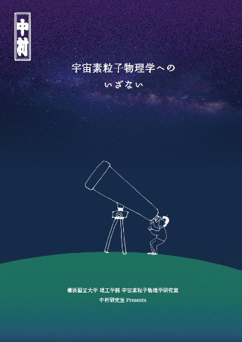
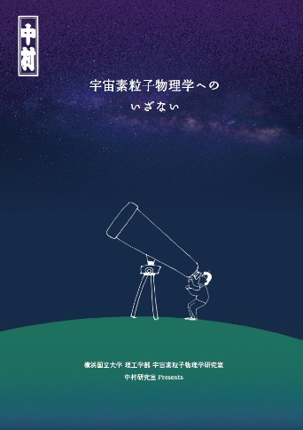

Update : 4 Jan. 2023
Update : 4 Jan. 2023中村研ニュース（2018年度）
【祝】学部４年の大塚が成績優秀者の表彰［2019年3月］
 学部４年の大塚稔也が，平成30年度卒業生の中で学業成績が特に優秀であると認められ，3月26日（火）付けで長谷部学長から表彰を受けました。
学部４年の大塚稔也が，平成30年度卒業生の中で学業成績が特に優秀であると認められ，3月26日（火）付けで長谷部学長から表彰を受けました。
【祝】学部４年の菊地が成績優秀者の表彰［2019年3月］
 学部４年の菊地修平が，3月26日（火）付けで，平成30年度卒業生の成績優秀者として高木副学長から表彰を受けました。
学部４年の菊地修平が，3月26日（火）付けで，平成30年度卒業生の成績優秀者として高木副学長から表彰を受けました。
修士生１名と学部生５名が修了・卒業［2019年3月］
3月26日（火）に修了式・卒業式が行なわれ，中村研も修士生１名と学部生５名が無事に修了・卒業して学位が授与されました。 修了・卒業したメンバーは次の通りで，卒業した４年生は４人が進学して２名が中村研に残ります。- 修士修了
- 狩野 芳樹
- 学部卒業
- 大塚 稔也，菊地 修平，田岡 和樹，谷山 天晴，福原 修平
中村とM1の狩野および越智が日本物理学会で登壇［2019年3月］
3月14日（木）から17日（日）まで，日本物理学会第74回年次大会が九州大学伊都キャンパスで開催され，初日の14日に中村と博士課程前期２年の狩野が，また最終日の17日に博士課程前期１年の越智がそれぞれ登壇しました。中村の講演のタイトルは「液体キセノン中の散乱長測定のための装置開発-2」，狩野の講演のタイトルは「液体キセノンの近赤外発光の研究」，また，越智の講演のタイトルは，「銀河系放射の偏光を用いた新しい偏光角度の較正手法とCMB偏光解析への影響」で，それぞれ有益な質疑応答が行われました。
M2の廣瀬がチリのPOLARBEAR-2実験に出張［2019年3月］
2月13日（水）から3月6日（水）まで，博士課程前期２年の廣瀬が，チリのアタカマ高原で進められている宇宙マイクロ波背景放射観測実験POLARBEAR-2の立ち上げ作業を行ないました。M1の越智が修士中間発表会で発表［2019年2月］
2月28日（木）に理工学府数物・電子情報系理工学専攻物理工学教育分野の修士中間発表会が開かれ，中村研の博士課程前期１年の越智がポスター発表を行ないました。なお，廣瀬は研究のためチリ出張中で，とりあえずポスターの提出のみ行ないました。発表のタイトルは次の通りです。 ◎越智 紘輝：「銀河系放射の偏光を用いた新しい偏光角度の較正手法とCMB偏光解析への影響」◎廣瀬 開陽：「POLARBEAR-2望遠鏡の多数の検出素子の同時較正手法の研究」
学部４年生の５人が卒論発表会で発表［2019年2月］
2月20日（水）に理工学部物理工学EPの卒論発表会が開かれ，中村研の学部４年生の５人が発表を行ないました。発表のタイトルは次の通りです。
◎大塚 稔也：「回折の低減を目的としたforebaffleの縁形状の研究」◎菊地 修平：「POLARBEAR-2実験におけるTESボロメータ読み出し基板の温度モニターシステムの研究」
◎田岡 和樹：「コールドミラーのUV領域での透過率と反射率の測定」
◎谷山 天晴：「低温でのミリ波測定用4Kクライオスタットに用いる光学窓材の選定」
◎福原 修平：「宇宙マイクロ波背景放射偏光観測を用いた弱重力レンズの推定」
M2の院生が修論発表会で発表［2019年2月］
2月13日（水）〜15日（金）に工学府物理情報工学専攻物理工学コースの修論・修了ポートフォリオ発表会が開かれ，13日（水）に中村研の博士課程前期２年の院生が発表を行ないました。発表のタイトルは次の通りです。
◎狩野 芳樹：「次世代の暗黒物質検出器のための液体キセノンシンチレータの研究」次期４年生の仮配属［2019年1月］
1月30日（水）に，中村研の平成31年度の新卒研生として４人が仮配属されました。狩野が「放射線検出器とその応用」研究会で発表［2019年1月］
1月28日（月）〜30日（水）に第33回「放射線検出器とその応用」研究会（高エネルギー加速器研究機構放射線科学センターと応用物理学会・放射線分科会との共催）が高エネルギー加速器研究機構（つくば）で開催され，29日（火）に博士課程前期２年の狩野が発表しました。タイトルは「次世代の暗黒物質検出器のための液体キセノンシンチレータの研究」で，世界をリードするような将来の暗黒物質探索実験への寄与を念頭に進めている，液体キセノンシンチレータに関する高エネルギー加速器研究機構および東京大学宇宙線研究所との共同研究について，現状と今後の展望について発表しました。OBのあべ松高志氏が来訪［2019年1月］
1月15日（火）に，中村研OBのあべ松高志氏（現・ルネサスエレクトロニクス）が来訪しました。宇宙科学シンポジウムでＭ1の越智が発表［2019年1月］
1月9日（水），10日（木）に宇宙航空研究開発機構で第19回宇宙科学シンポジウムが開かれ，両日に博士課程前期１年の越智が，宇宙のインフレーションモデルの検証を目指す共同研究，宇宙マイクロ波背景放射のＢモード偏光観測衛星計画LiteBIRDに関するポスター発表をしました。越智の発表のタイトルは，「銀河系放射の偏光を用いた新しい偏光角度の較正手法とCMB偏光解析への影響」でした。新年おめでとうございます［2019年1月］
昨年も多くの皆様にいろいろとご支援頂き，どうも有難うございました。今年も，2018年に引き続き，宇宙素粒子実験に邁進します。宇宙暗黒物質探索で用いられる液体キセノンに関しては，XMASS実験と共に，液体キセノンの特性を明らかにするユニークな研究を推進するつもりです。この研究では，新しい工夫を凝らした世界的にも前例のない実験装置を構築して液体キセノンのユニークなデータを得ようとしていますが，その結果は宇宙暗黒物質の探索手法の世界的なトレンドに大きな影響を与えるかもしれません。
また，学生の一部は宇宙マイクロ波背景放射観測実験（POLARBEAR，LiteBIRD計画）にも深く本質的に関与しつつあります。
これらのような中村研究室の研究活動を今後ともご支援下さい。
今年もどうぞよろしくお願い申し上げます。
【連絡】中村研に関心をお持ちの３年生へ［2019年1月］
本Web内の研究テーマの情報は古いものがありますが，現在も非常に忙しいため更新には時間が掛かりそうです。そこで，研究内容に関する最新の情報は，研究室に直接来てお確かめ下さい。また，前項に掲載している，研究室の商会パンフレット第２版もご参照下さい。 なお，以前から，卒研配属を考えている学部３年生へ向けたメッセージを載せています。>> メッセージのページ
【再掲】研究室の紹介パンフレット第２版［2018年2月］
 中村研究室の紹介パンフレット「宇宙素粒子物理学へのいざない」（京都工芸繊維大学大学院の宇都宮里梨子氏の全面的なご協力とデザインによる）が，若干手直しされて第２版になりました。なお，同じもののデジタル版もここに公開しています。対応するQRコードもご利用下さい。
中村研究室の紹介パンフレット「宇宙素粒子物理学へのいざない」（京都工芸繊維大学大学院の宇都宮里梨子氏の全面的なご協力とデザインによる）が，若干手直しされて第２版になりました。なお，同じもののデジタル版もここに公開しています。対応するQRコードもご利用下さい。
中村宅で中村研の忘年会［2018年12月］
12月25日（火）に，今年も中村宅に在学生の面々が集まり，中村研の忘年会のひとときを楽しく過ごしました。今年はスーパーカミオカンデのジグソーパズルの新版（大型版）に取り組み，余裕を持ってお開きまでに無事に完成させることが出来ました！中村が東大宇宙線研共同利用研究成果発表会で講演［2018年12月］
12月21日（金），22日（土）に，東京大学宇宙線研究所の共同利用研究成果発表研究会が東京大学宇宙線研究所（柏キャンパス）で開催され，中村も発表を依頼されて21日（金）の午後に講演を行ないました。講演のタイトルは「液体キセノン中におけるシンチレーション光の散乱過程の研究」で，表題の研究の進捗状況と今後の明るい展望について報告しました。中村がYNUサイエンスカフェで司会を担当［2018年12月］
12月18日（火）に第63回YNUサイエンスカフェ「超伝導量子コンピュータ〜超伝導と量子の力で最適化問題を解く〜」（話題提供：大学院工学研究院准教授の山梨裕希先生）が本学の附属図書館のカフェにて開催され，中村が司会進行を担当しました。難易度の高い話題でしたが，皆様のご協力のお陰で充実した時間となりました。OBの山下徹氏が来訪［2018年12月］
12月14日（金）に，中村研OBの山下徹氏（現・AGC）が来訪しました。中村が学部３年生向けに卒研紹介［2018年12月］
12月6日（木）に，物理工学EPの３年生向けの卒研ガイダンスがあり，中村も研究室紹介を行ないました。わずか７分だったので大まかな話でしたが，興味を持っていただければ幸いです。詳しいことは，研究室に来て直接聞いて頂ければ幸いです。中村が神岡鉱山のXMASS実験のリモートシフトを実施［2018年10,11月］
10月26日（金）から31日（水），11月18日（日）から23日（金）に，中村が，神岡鉱山で進められている暗黒物質探索実験XMASSのリモートシフトを行ないました。カブリIPMUの金子大輔氏がご来訪［2018年10月］
10月31日（水）に，カブリIPMU（東京大学数物連携宇宙研究機構）の金子大輔氏が来訪され，POLARBEAR実験に関する打合せをM1の廣瀬と行なうと共に，金子氏が以前に大量の液体キセノンをγ線カロリメータに用いるMEG実験に参加されていた関係から中村研の液体キセノンの実験装置を見学されました。M1の廣瀬が日本天文学会2018年秋季年会で登壇［2018年9月］
9月19日（水）から21日（金）まで，日本天文学会2018年秋季年会が兵庫県立大学で開催され，博士課程前期１年の廣瀬が20日に登壇しました。講演のタイトルは「宇宙マイクロ波背景放射観測実験POLARBEAR-2の検出器読み出しチャンネルの割り当て検証手法の開発」で，中村研の学生が参加しているチリで行なう宇宙マイクロ波背景放射観測実験POLARBEAR-2実験の技術開発について報告しました。
中村とM2の狩野が日本物理学会秋季大会で登壇［2018年9月］
9月14日（金）から17日（月）まで，日本物理学会2018年秋季大会が信州大学松本キャンパスで開催され，中村と博士課程前期２年の狩野が14日に登壇しました。講演のタイトルは，中村が「液体キセノン中の散乱長測定のための装置開発」，狩野が「液体キセノン中の散乱長測定のための光学系のシミュレーション」で，中村研で進めている液体キセノンに関する共同研究について報告しました。
大学院理工学府博士課程（前後期）の一般選抜で２名合格［2018年9月］
平成31年度横浜国立大学大学院理工学府の一般選抜において，博士課程（前期）で本研究室を志望する受験生が１名，また，博士課程（後期）で本研究室を志望する受験生が１名，それぞれ合格しました。神戸大学の身内賢太朗先生がご来訪［2018年8月］
8月28日（火）に，神戸大学理学部の身内賢太朗先生が博士課程の院生と共に来訪され，中村研の液体キセノンの実験装置を見学されました。OBの金井啓晃氏と中野龍之介氏が来訪［2018年8月］
8月17日（金）に，中村研OBの金井啓晃氏（現・三菱電機）と中野龍之介氏（現・東京大学大学院生）が来訪しました。（左の背後は窓から見える富士山のシルエットです。）大学院理工学府博士課程（前期）の特別選抜で２名合格［2018年7月］
平成31年度横浜国立大学大学院理工学府博士課程（前期）の特別選抜において，本研究室を志望する受験生が２名合格しました。中村がYNUサイエンスカフェのお手伝い［2018年7月］
7月6日（金）に第59回YNUサイエンスカフェ「絶滅した生物vs.生き延びた生物」（話題提供：大学院環境情報研究院准教授の和仁良二先生）が本学の附属図書館のカフェにて開催され，中村もコーディネータとしてお手伝いしました。中村が神岡鉱山のXMASS実験のリモートシフトを実施［2018年4,5月］
4月28日（土）から5月1日（火），5月28日（月）から30日（水）に，中村が，神岡鉱山で進められている暗黒物質探索実験XMASSのリモートシフトを行ないました。１名が大学院に進学し，５名が卒研配属しました［2018年4月］
2018年度がスタートし，新Ｍ１の２人と新４年生５人が研究室に配属されました。- 越智 紘輝（M1）
- 廣瀬 開陽（M1）
- 大塚 稔也（B4）
- 田岡 和樹（B4）
- 谷山 天晴（B4）
- 菊地 修平（B4）
- 福原 修平（B4）